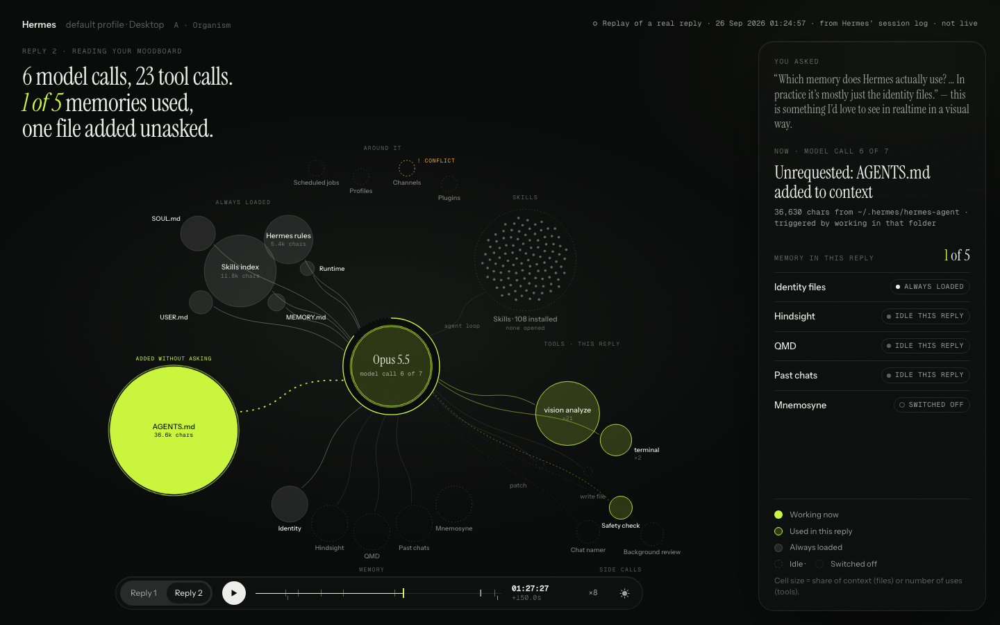
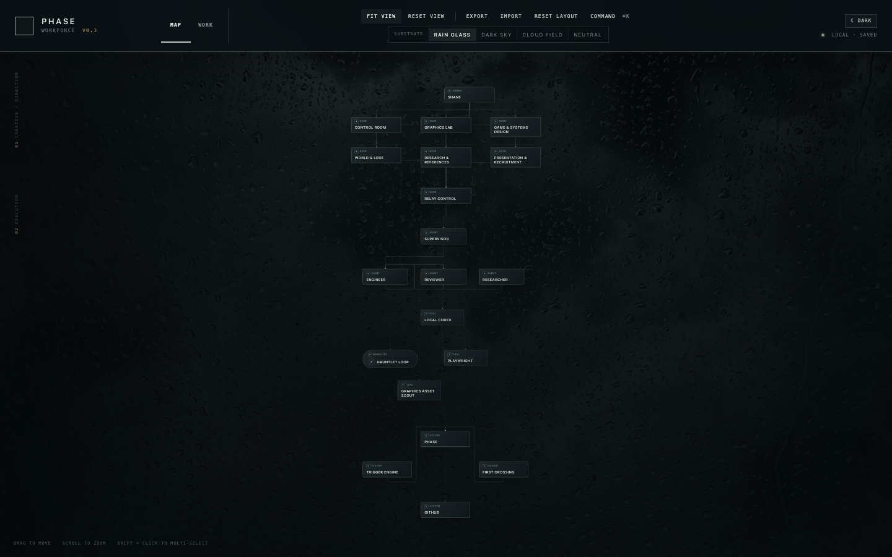
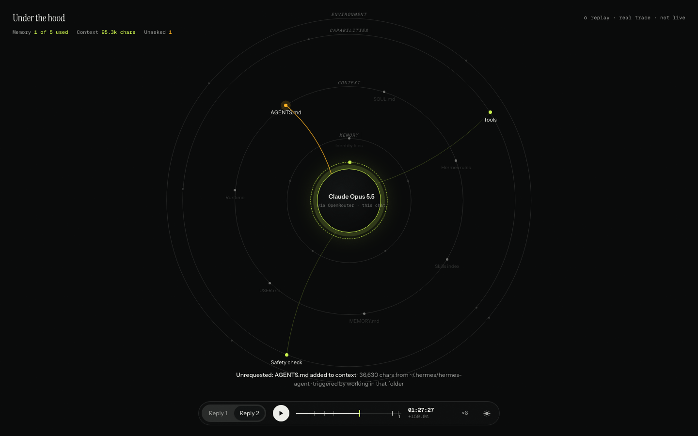
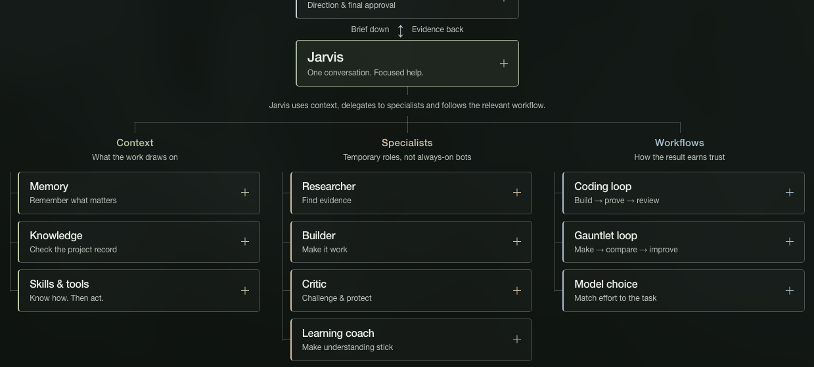

Experiments, systems, and unfinished questions.
Past and present projects in AI, from event operations to making intelligent systems easier to see and steer.

Visual AI environment
Active · Research and prototypes for a visual layer that makes AI systems understandable and directable.
Read the project brief →
Runbook
Discontinued · An event-operations control station explored to a functional MVP, not a production launch.
Explore the archive →
PHASE Workforce
Archived · A spatial AI workstation prototype that advanced to local execution, but not real-world product testing.
Explore the retrospective →
Under the hood
An experimental live view of what an agent uses. One study within the visual AI project.
See the prototype →
The architecture
How my own system is organised: context, specialists and workflows around one conversation.
Explore the map ↓MeDirection & final approval
I set the goal, constraints and definition of good work. Jarvis brings evidence and choices back to me.
Why Creative intent and consequential decisions stay human.
Brief downEvidence back
JarvisOne conversation. Focused help.
My coordinator inside Hermes. It retrieves context, calls on the right specialist roles and brings their findings back together.
Why One point of contact, without asking one model to do every job at once.
Jarvis uses context, delegates to specialists and follows the relevant workflow.
Context
What the work draws on
MemoryRemember what matters
Durable preferences and decisions, with Hindsight for long-term recall. Retrieved when relevant—not the whole chat history.
Why Less repeated setup, without filling every prompt with old conversations.
KnowledgeCheck the project record
QMD searches curated project documents. Memory offers context; the source record settles what was actually agreed.
Why A confident recollection is not a reliable source.
Skills & toolsKnow how. Then act.
Skills hold reusable procedures. Tools let Hermes search, edit files, use a browser and run real checks.
Why Useful work ends in a checked result, not just instructions.
Specialists
Temporary roles, not always-on bots
ResearcherFind evidence
Investigates a question and returns sources, uncertainty and counterevidence to Jarvis.
Why Decisions should survive a check against the facts.
BuilderMake it work
Builds within the agreed scope and tests the path a person will actually use. Returns the artifact, checks and remaining risks.
Why A file existing is not proof that the result works.
CriticChallenge & protect
A fresh review checks assumptions, defects, privacy and permissions before consequential actions.
Why The builder should not be its own final judge.
Learning coachMake understanding stick
Explains concepts, gives relevant examples and checks understanding through practice.
Why Getting an answer is not the same as learning how to reason.
Workflows
How the result earns trust
Coding loopBuild → prove → review
Agree the task → build → test → independent review → my approval. Publishing is a separate decision.
Why Tests and a fresh reviewer catch different mistakes. Neither replaces my approval.
Gauntlet loopMake → compare → improve
My PHASE visual workflow: set clear criteria, build a version, capture comparable results, then get a fresh critique. Repeat within a fixed budget.
Why Compare evidence, not promises. Stop at the limit and bring the best options back for my judgment.
Model choiceMatch effort to the task
Use a straightforward tool when it will do. Choose model strength by difficulty, risk and cost; escalate difficult judgment.
Why Spend capability where it matters. Local coding routes are experimental, not an automatic cheap fallback.